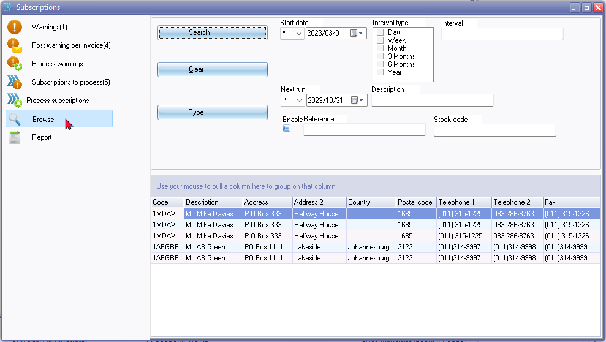
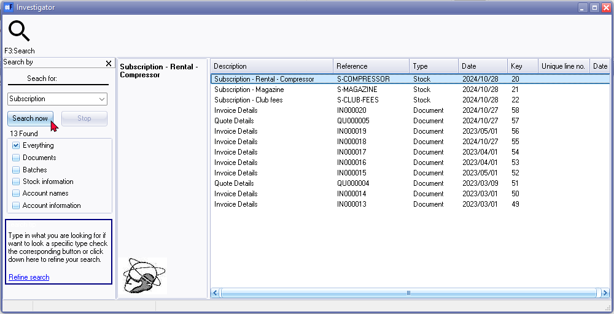
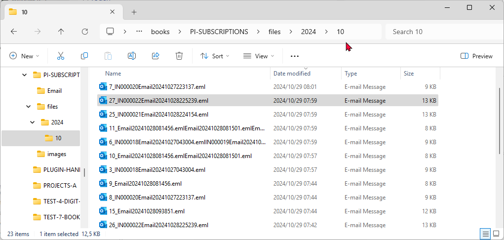

Subscriptions - Search options
Subscriptions - Browse options
Click on the Browse button.

Click on the Search button. By default, no options should be selected, but you may select the criteria to filter or locate specific subscriptions.
Subscriptions - Central search
On the central search Search (Default ribbon) option you may search for subscriptions meeting your search criteria.

The Subscriptions plugin in osFinancials5/TurboCASH5 is a powerful tool that allows you to manage and search for subscription-based products and related documents. Here’s a breakdown of how the central search feature works:
Central Search Options
- Stock:
- Function: This option allows you to search for stock items (products) that meet your specified criteria.
- Action: When you double-click on a specific stock item from the search results, it will open the Stock item (product) edit form.
- Additional Functionality: Within the edit form, you can navigate to the Document groups tab to print both unposted and posted documents related to that stock item.
- Document:
- Function: This option lists documents (such as invoices or quotes) that include subscription-based stock items.
- Action: Double-clicking on a document from the search results will allow you to print the selected document.
- Comments Search:
- Function: You can search for documents based on specific comments, such as "Period 2023/05".
- Result: This will list only the documents that are associated with the specified period, in this case, May 2023.
- Practical Examples
- Stock Search Example:
- Search Criteria: "Monthly Subscription"
- Result: The search will list all stock items that match "Monthly Subscription".
- Action: Double-clicking on one of the listed items will open the edit form, where you can manage the product details and print related documents.
- Document Search Example:
- Search Criteria: "Subscription Invoice"
- Result: The search will list all documents that include subscription stock items.
- Action: Double-clicking on a document will allow you to print it directly.
- Comments Search Example:
- Search Criteria: "Period 2023/05"
- Result: The search will list all documents specifically for the period of May 2023.
- Action: You can review and print these documents as needed.
The Subscriptions plugin in osFinancials5/TurboCASH5 provides a comprehensive way to manage subscription-based products and related documents. The central search feature allows you to efficiently find and manage stock items, documents, and specific periods, streamlining your workflow and ensuring that you can easily access the information you need.
Subscriptions - Set of Books - Subscription Files
Email Folder
The processed subscriptions, including processed warnings, are stored in your system's default file explorer within two folders: the 'Email folder' and the 'Files folder'.

- Email Folder: The 'Email folder' is located within the Set of Books folder. It contains:
- Processed Invoices and Quotes: These files are named after the document number.
- Processed Warnings: These files are named after the debtor account name.
Both types of files are generated as PDF documents and can be printed using your system's default PDF application or any program associated with PDF files.
- Printing and Previewing
- Select an Invoice or Quote: Double-click to print the selected document.
- Preview: If the Preview feature is enabled in your file explorer, you can preview the document before printing.
Example : Printed invoice

Example : Printed Warning layout

Files Folder
The Files folder stores your email messages in sub-directories organised by the year and month in which the emails were sent.

Some key features is:
- Document Files (Invoices or Quotes): These files are named to include the document number.
- Warning Files: These files are named with a date-time stamp and do not include a document number.
- Accessing and Searching
- Opening an Email: Double-click on a selected item to open the email message using your system's default application or program associated with the *.eml file type.
- Searching: Use the search box in your file explorer to find specific email messages. For example, you can search by:
- Document number
- Debtor's name
- Month, etc.
The file explorer will display only the email messages that match your search criteria.